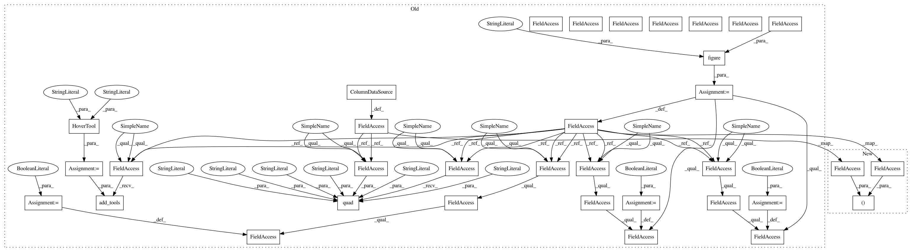

163731b1eb2cf4131943722f513a6087ccc8da5e,distributed/bokeh/components.py,ProfileTimePlot,__init__,#ProfileTimePlot#Any#Any#,392
Before Change
self.state = profile.create()
data = profile.plot_data(self.state, profile_interval)
self.states = data.pop("states")
self.source = ColumnDataSource(data=data)
changing = [False] // avoid repeated changes from within callback
@without_property_validation
def cb(attr, old, new):
if changing[0]:
return
with log_errors():
if isinstance(new, list): // bokeh >= 1.0
selected = new
else:
selected = new["1d"]["indices"]
try:
ind = selected[0]
except IndexError:
return
data = profile.plot_data(self.states[ind], profile_interval)
del self.states[:]
self.states.extend(data.pop("states"))
changing[0] = True // don"t recursively trigger callback
self.source.data.update(data)
if isinstance(new, list): // bokeh >= 1.0
self.source.selected.indices = old
else:
self.source.selected = old
changing[0] = False
if BOKEH_VERSION >= "1.0.0":
self.source.selected.on_change("indices", cb)
else:
self.source.on_change("selected", cb)
self.profile_plot = figure(tools="tap", height=400, **kwargs)
r = self.profile_plot.quad("left", "right", "top", "bottom", color="color",
line_color="black", source=self.source)
r.selection_glyph = None
r.nonselection_glyph = None
hover = HoverTool(
point_policy="follow_mouse",
tooltips=
<div>
<span style="font-size: 14px; font-weight: bold;">Name:</span>
<span style="font-size: 10px; font-family: Monaco, monospace;">@name</span>
</div>
<div>
<span style="font-size: 14px; font-weight: bold;">Filename:</span>
<span style="font-size: 10px; font-family: Monaco, monospace;">@filename</span>
</div>
<div>
<span style="font-size: 14px; font-weight: bold;">Line number:</span>
<span style="font-size: 10px; font-family: Monaco, monospace;">@line_number</span>
</div>
<div>
<span style="font-size: 14px; font-weight: bold;">Line:</span>
<span style="font-size: 10px; font-family: Monaco, monospace;">@line</span>
</div>
<div>
<span style="font-size: 14px; font-weight: bold;">Time:</span>
<span style="font-size: 10px; font-family: Monaco, monospace;">@time</span>
</div>
<div>
<span style="font-size: 14px; font-weight: bold;">Percentage:</span>
<span style="font-size: 10px; font-family: Monaco, monospace;">@percentage</span>
</div>
)
self.profile_plot.add_tools(hover)
self.profile_plot.xaxis.visible = False
self.profile_plot.yaxis.visible = False
self.profile_plot.grid.visible = False
self.ts_source = ColumnDataSource({"time": [], "count": []})
self.ts_plot = figure(title="Activity over time", height=100,
x_axis_type="datetime", active_drag="xbox_select",
After Change
self.state = profile.create()
data = profile.plot_data(self.state, profile_interval)
self.states = data.pop("states")
self.profile_plot, self.source = profile.plot_figure(data, **kwargs)
changing = [False] // avoid repeated changes from within callback
In pattern: SUPERPATTERN
Frequency: 3
Non-data size: 34
Instances
Project Name: dask/distributed
Commit Name: 163731b1eb2cf4131943722f513a6087ccc8da5e
Time: 2019-01-31
Author: mrocklin@gmail.com
File Name: distributed/bokeh/components.py
Class Name: ProfileTimePlot
Method Name: __init__
Project Name: dask/distributed
Commit Name: 163731b1eb2cf4131943722f513a6087ccc8da5e
Time: 2019-01-31
Author: mrocklin@gmail.com
File Name: distributed/bokeh/components.py
Class Name: ProfilePlot
Method Name: __init__
Project Name: dask/distributed
Commit Name: 163731b1eb2cf4131943722f513a6087ccc8da5e
Time: 2019-01-31
Author: mrocklin@gmail.com
File Name: distributed/bokeh/components.py
Class Name: ProfileServer
Method Name: __init__